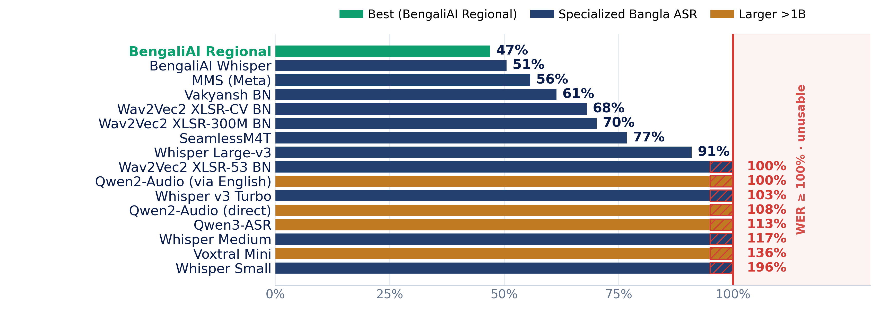
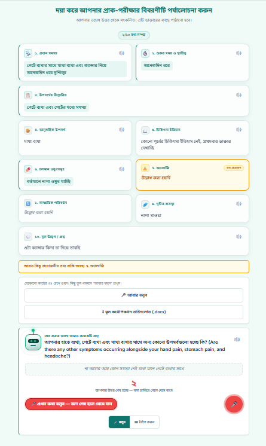
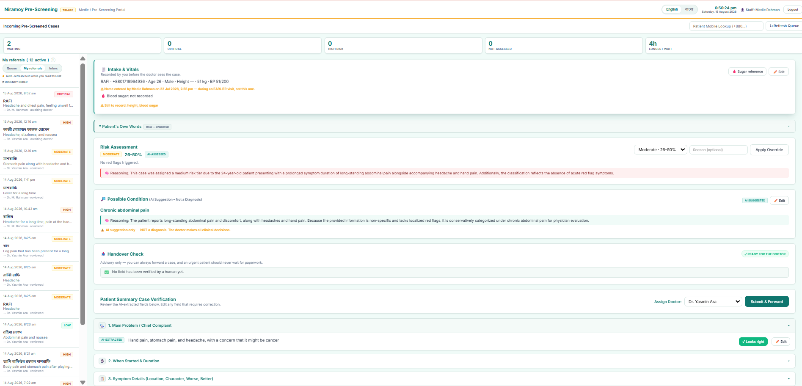
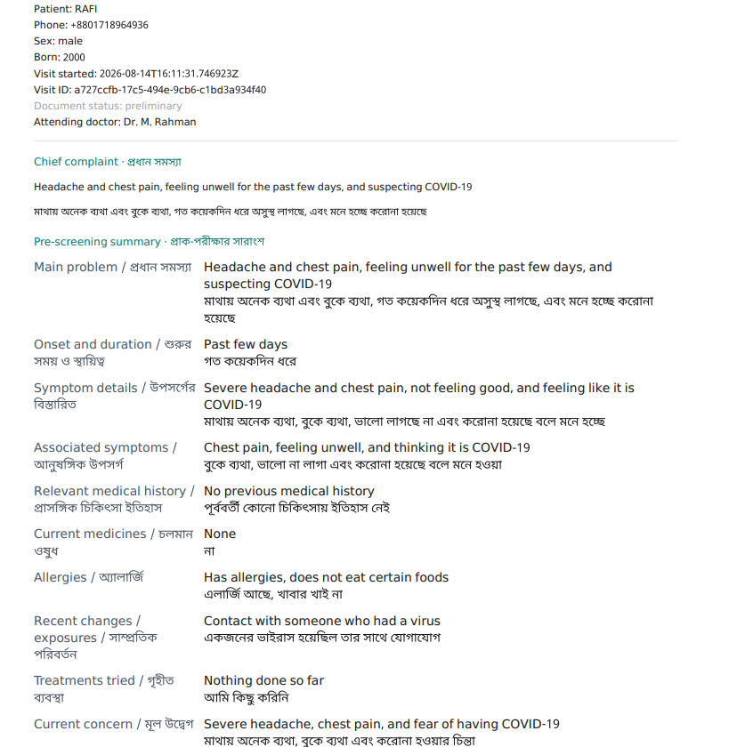

Patient Speaks
Symptoms by voice — Bangla / Banglish / dialect (typing fallback)
Speech Understanding
Transcribe → clean → normalise the spoken input
Information Capture
Extract symptoms; follow-up loop fills every gap
Assessment & Triage
Risk tier + rule-based red-flag check, explained
Clinical Documentation
Structured record → EHR; export FHIR · PDF · DOCX
Doctor Review
Verify, prescribe & decide → doctor-ready record
Introduction & Objective
- In busy Bangladeshi clinics, symptom history is taken verbally in Bangla, Banglish or dialect, under heavy time pressure — details are lost before consultation.
- Capturing this speech reliably is hard; a raw transcript is neither complete nor structured, and cannot serve as a clinical record.
- Voice-first interaction suits elderly, low-literacy and non-technical patients better than typed forms, and structured pre-consultation records save clinician time.
- Capture symptoms naturally by voice (typing fallback) in Bangla / Banglish / dialect.
- Produce a verified, structured clinical summary and complete missing details through follow-up.
- Support clinical triage and keep the doctor's review in the loop.
- Stay dialect-aware and preserve the patient's own words for traceability.
- Generate a doctor-ready EHR / FHIR record — assist, never diagnose.
Patients · triage medics · doctors — one shared record across three portals.
Faster, more complete intake and fewer missed details, giving the doctor a structured record they can trust — without adding clinical risk or replacing judgment.
Problem, Motivation & Novelty
Dialect variation, code-switching, medical terms & clinic noise make single-pass Bangla ASR unreliable — a transcript alone can't be trusted clinically.
Cutting documentation burden and missed information at intake directly improves consultations in high-volume, low-resource clinics.
A stateful, conversational pre-screener that verifies & fills gaps instead of trusting one transcript — with rule-based red-flag safety, explainable risk, and a dialect-aware, EHR/FHIR-integrated three-portal, human-in-the-loop workflow.
An end-to-end, three-portal working prototype (voice → structured record → EHR/FHIR) plus a 16-model Bangla dialect ASR benchmark whose findings shaped the conversational, verify-and-complete design.
In high-volume, low-resource clinics, a few minutes of clean, structured history per patient compounds into meaningful time saved and safer consultations at scale.
Methodology — how the system works
~4.7 h multi-dialect audio (16 kHz mono) collected & preprocessed; speech models scored by WER / CER / BLEU per dialect. One small service per module; every model call logs its provider & latency, and each risk output carries a stored reason.
Speech-Recognition Investigation

16 ASR systems benchmarked on multi-dialect medical speech. WER counts substitutions, deletions and insertions ÷ words — so hallucinated extra words push WER past 100% (more errors than words = unusable). Best model still errs ~47%; larger models did not help.
Honesty note: this is an offline research benchmark; the live prototype uses the browser Web Speech API, not these models.
System Features — the Three Portals & the Clinical Record






Technology Stack
Limitations & Future Work
- Live STT relies on the cloud browser API; dialect recognition stays error-prone.
- Login / OTP & encryption are prototype-stage — not production security.
- Extraction accuracy not yet formally measured; depends on free-tier LLMs.
- Some regional dialects had limited evaluation data.
- On-device quantised STT & summary model — offline & private.
- Fully hands-free voice follow-up; LoRA dialect ASR fine-tuning.
- Formal accuracy evaluation (extraction precision / recall).
- Production authentication, encryption & real SMS OTP.
Conclusion
A complete voice-first, safety-first prototype turns spoken Bangla / dialect symptoms into a structured, doctor-ready EHR / FHIR record across three portals, backed by a 16-model ASR study. It reduces intake burden and organises clinical information while keeping clinical judgment with humans — it assists the workflow and never diagnoses.